Charlotte & Arnaud
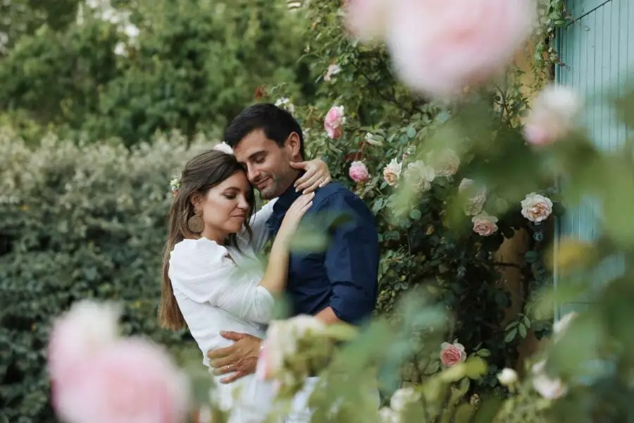
C’est à leur domicile qu’Arnaud et Charlotte ont célébré leur union. Avoir le même nom leur tenait très à coeur afin d’accomplir tous leurs projets personnels et professionnels.
C’est pour cela qu’on a préparé un mariage très intimiste. Ce qui leur tenait à coeur, c’était un repas sur-mesure et une magnifique décoration sur les tons pastel, bois et doré. Tout ce qu’on aime, ce côté délicat et raffiné !
Ce couple nous a montré et apporté beaucoup d’amour. Et vous ? Aimeriez-vous un mariage en petit comité et unique ?
« Nous descendons à peine de notre petit nuage, le 18 juin dernier était magique ! Un grand merci à Alexandra c'était parfait. On ne s'attendait pas à prendre autant de plaisir le jour J, tout le monde a adoré la décoration, tous les prestataires, l'organisation etc. Très heureux d'être tombés il y a quelques mois sur Lovely Day Event, heureusement ! Un grand merci encore Alexandra pour avoir fait de ce jour, notre mariage parfait ! »Charlotte & Arnaud
par Wedstory
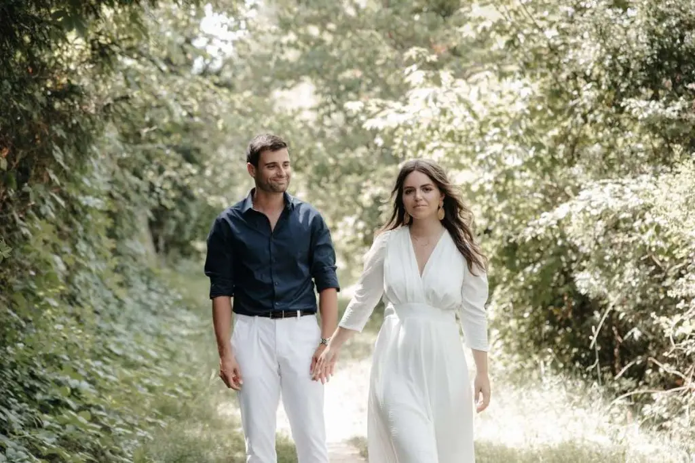


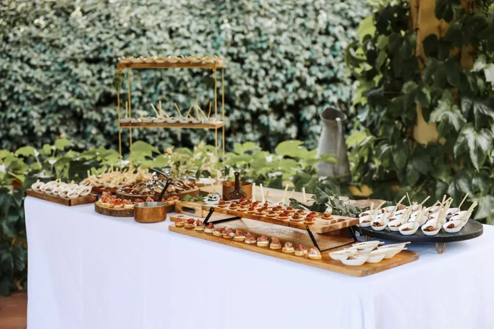
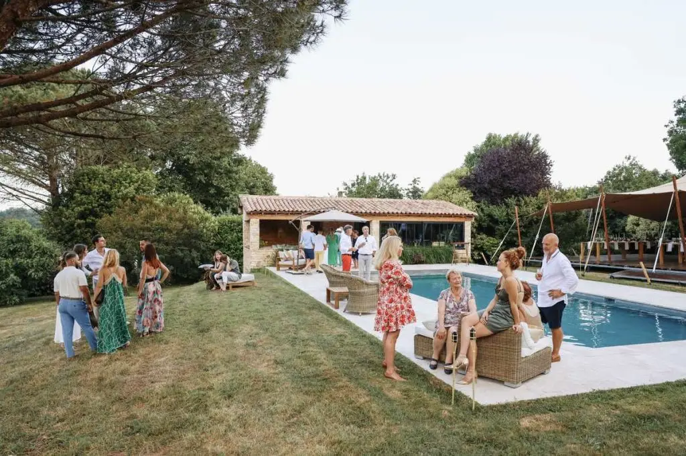


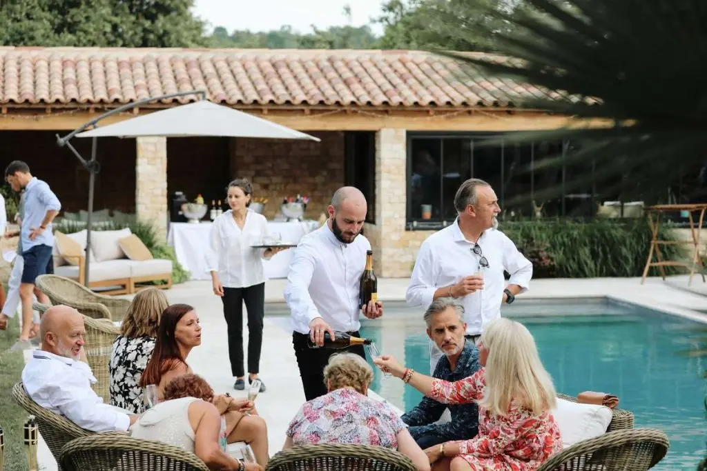
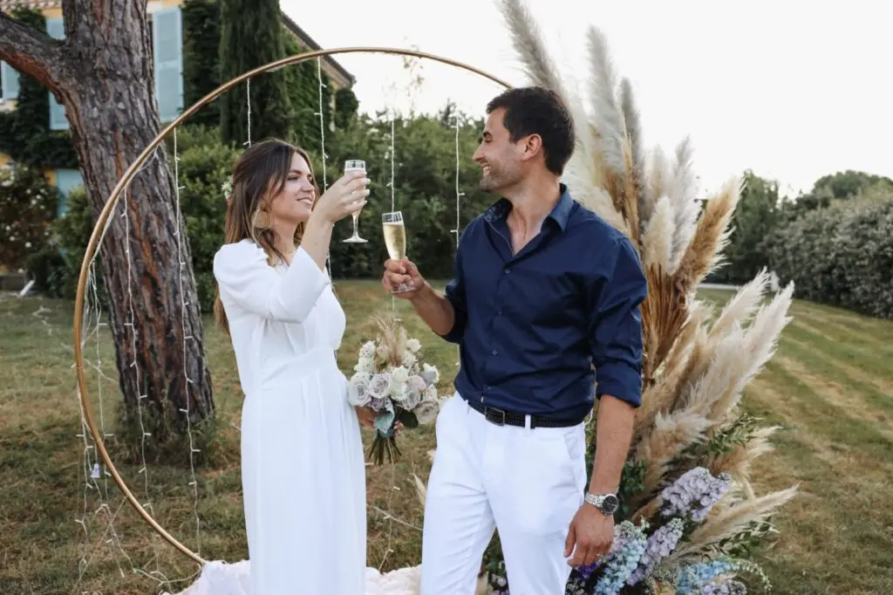
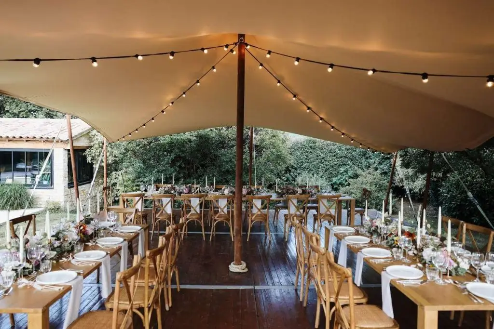


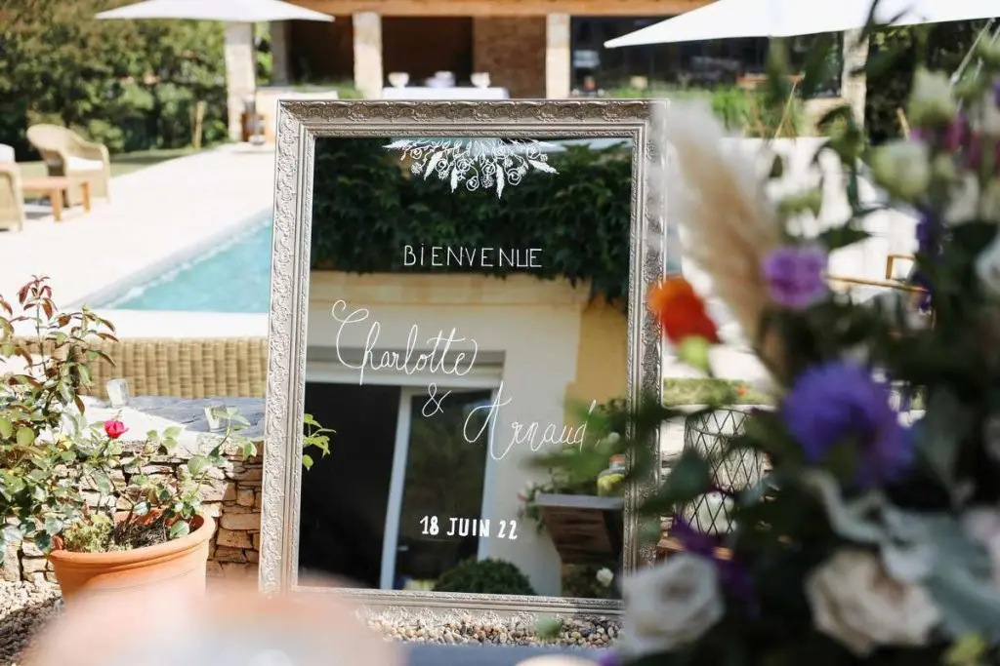


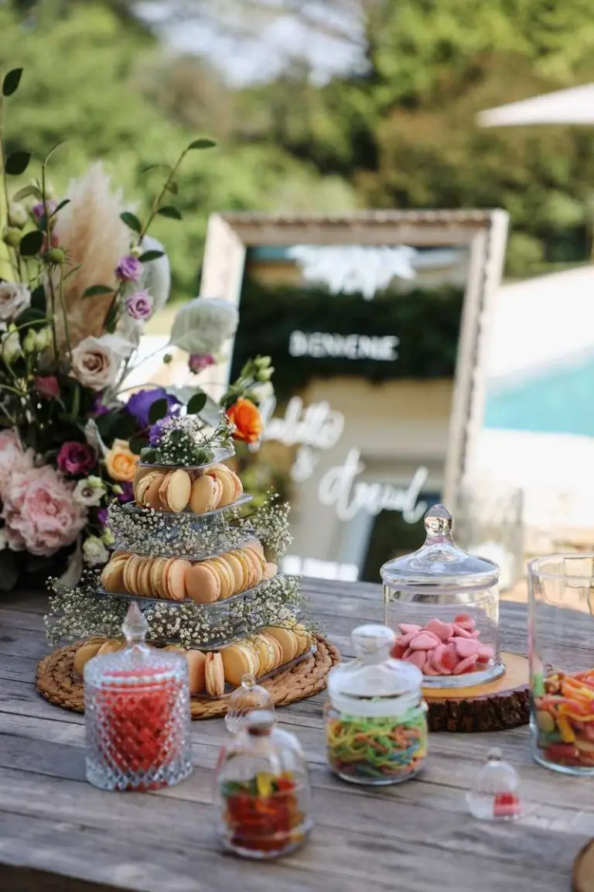
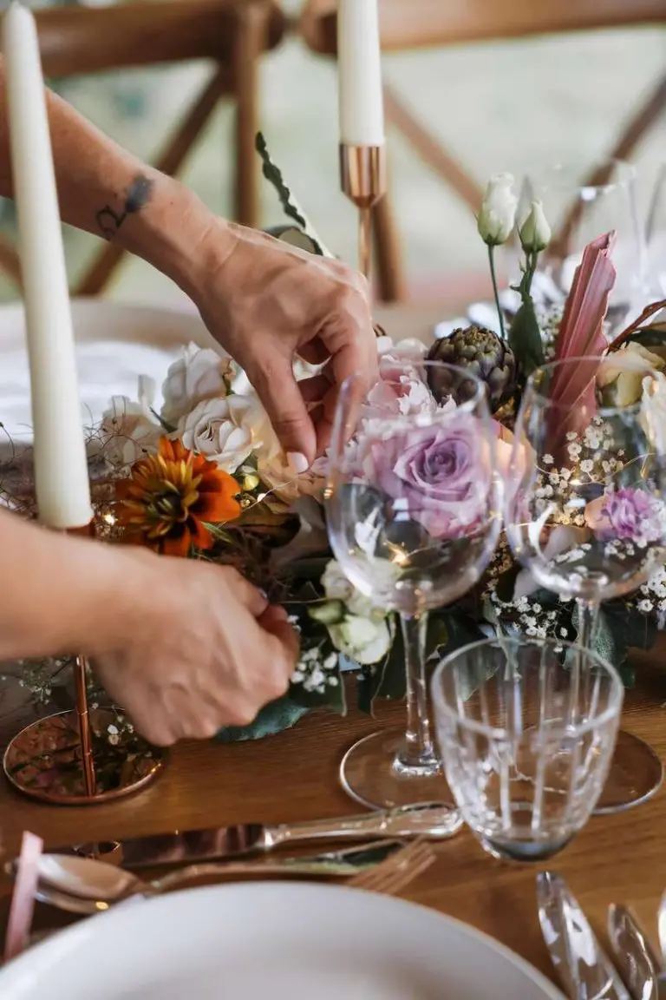

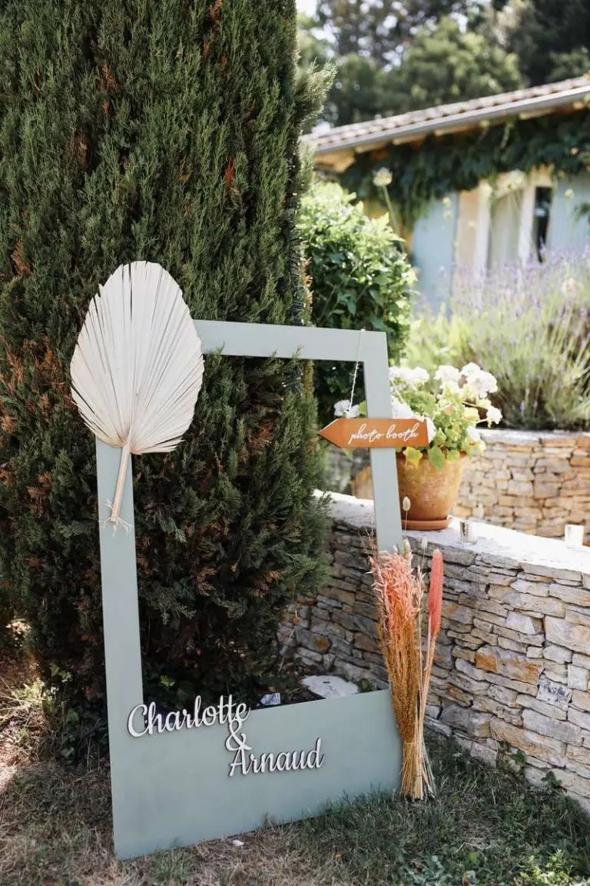


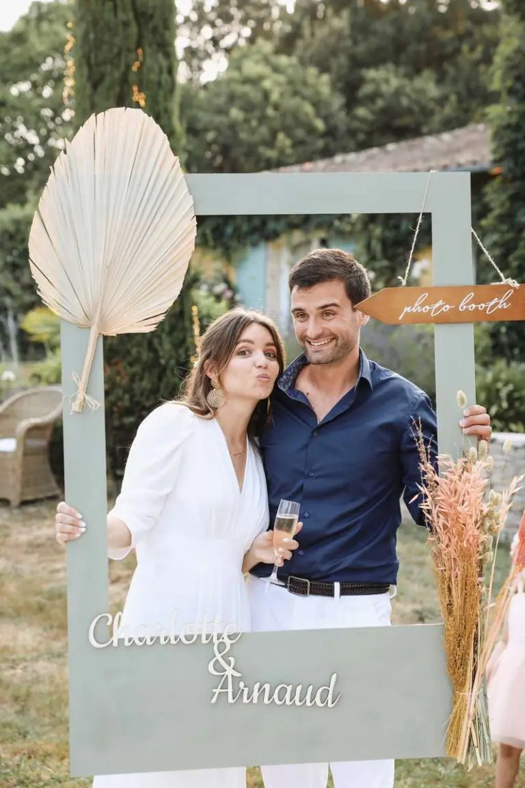

Delphine & Haythem
Coordination du Jour J ? Bien sûr, je m’occupe également que de cette partie si vous avez tout géré avant. Delphine & Haythem, les mariés ont préparé leur mariage chic…
Lire leur histoire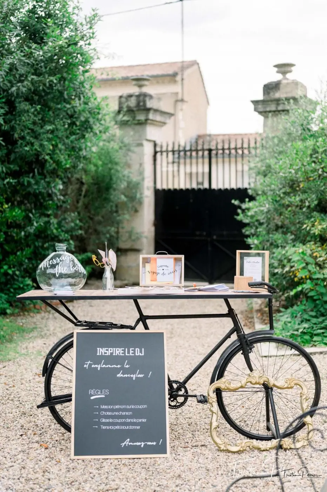
Emilie & Aurélien
C’est sous le soleil étincelant du 3 juillet 2021 , qu’ Emilie et Aurélien se sont mariés. Après une union civile la veille à la mairie de Léognan et des retrouvailles…
Lire leur histoire